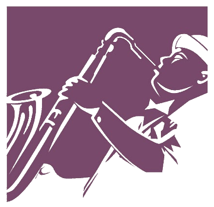
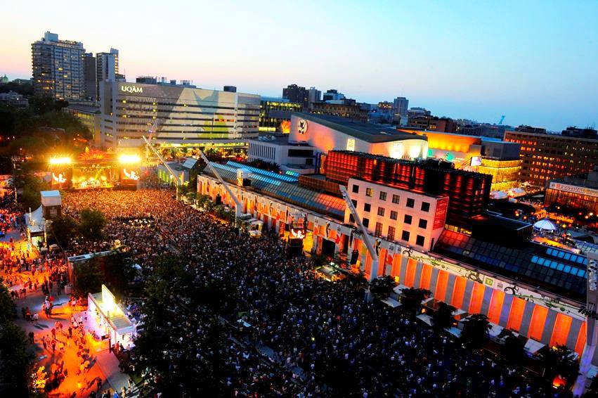
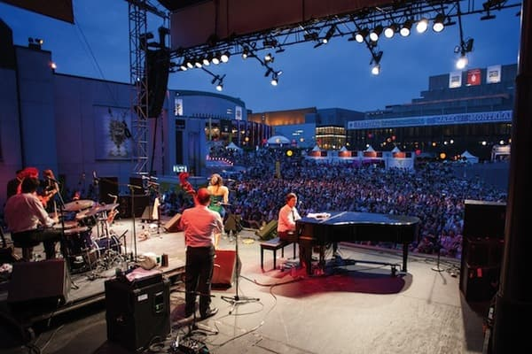
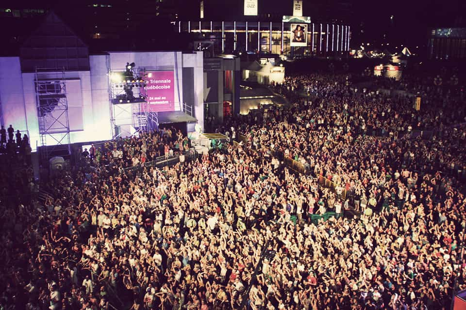
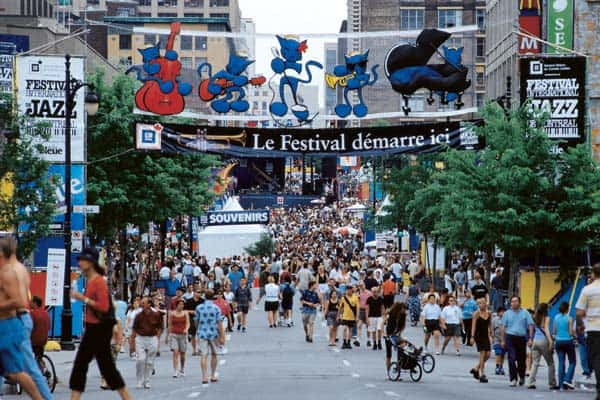

Jazz In 21 St Centuary
Jazz music has evolved to the point where basic signature of the style has minimized into an influential element. For example, the Jazz music of the 80's electronica music of IDM which stand for Intelligent Dance Music where such artists like Bjourk is known for.
The drum and bass is another form of electronica that does not use the typical improvisation that is one of the key elements of Jazz music. In fact, this is not thought of as Jazz music at all, but a style that was influenced by Jazz music.
The array of Jazz music is present in the Jazz fests who played music with African elements that did not sound like Jazz music. One thing we all should look out for is the musical elements in Jazz that stand out such as the complex rhythm, and the chromatic chordal harmony or chord progressions typical for the Jazz Music.

Jazz Festivals around the world
Nishville
Nišville (Serbian - Нишвил, Nišvil) is an annual summer music festival in the Ancient Fortress of Niš, Serbia. From the festival’s very beginning, its concept has been based on presenting the ‘traditional’ jazz forms together with their fusion with the ethnic tradition from the different parts of the world, especially from the Balkans. The jazz festival tradition in Niš, initiated in 1981, and terminated in 1991, was renewed at the end of 1994 thanks to the producer and economist who specializes in cultural management, Ivan Blagojević, theatre director by vocation. Ever since the start, the Festival has established cooperation with cultural centers and embassies of the United States of America, the Netherlands, France, Norway, Germany, whose musicians have significantly participated at this manifestation and the names of the participants increasingly became greater: Reggie Workmen, Jimmy Cobb, Philip Catherine, Aria Hendricks, Miles Griffith, Denise Jannah, Bemshie Shearer etc. Based on the ideas of Ivan Blagojević, Nišville has frequently had programs involving different musicians.
Forming the same bands, including the performance by Šaban Bajramović with jazz musicians from Serbia, Bulgaria and Germany, followed by the “ad hoc” ensemble whose main lineup was made up of musicians from the “triangle” of Serbia – Bulgaria – Macedonia: Vasil Hadžimanov, Teodosi Spasov and Toni Kitanovski (band which continued working after Nišville), and a special exclusive involved the only joint performance by the Queen and King of Romani music – Esma Redžepova and Šaban Bajramović. Nišville Festival has been visited by a great number of music lovers from the whole Serbia, neighboring countries, as well as the countries of Western Europe. The festival offered the package “Jazz Summer for 90 Euros” (accommodation with three meals per day and a set of tickets for all four festival nights), and one of the permanent segments of the festival is the free Nišville workshop – chat meetings, where almost all the participants of the main program, including the headliners of the festival, appeared as lecturers. Every year, Nišville is followed by over 300 accredited journalists from Serbia and abroad, and among them, there are representatives of renowned music and political magazines.
Montreal
The Festival International de Jazz de Montréal (English: Montreal International Jazz Festival) is an annual jazz festival held in Montreal, Quebec, Canada. The Montreal Jazz Fest holds the 2004 Guinness World Record as the world's largest jazz festival. Every year it features roughly 3,000 artists from 30-odd countries, more than 650 concerts (including 450 free outdoor performances), and welcomes close to 2.5 million visitors (34% of whom are tourists) as well as 400 accredited journalists. The festival takes place at 10 free outdoor stages and 10 indoor concert halls. A major part of the city's downtown core is closed to traffic for ten days, as free outdoor shows are open to the public and held on many stages at the same time, from noon until midnight. Attendance at some shows is over 100,000 people, and occasionally exceeds 200,000. Shows are held in a wide variety of venues, from relatively small jazz clubs to the large concert halls of Place des Arts. Some of the outdoor shows are held on the cordoned-off streets, while others are in terraced parks. It should not be confused with the Montreux Jazz Festival in Switzerland, which is the second largest jazz festival in the world after Montreal's. The Montreal Jazz Festival was conceived by Alain Simard, who had spent much of the 1970s working with Productions Kosmos bringing artists such as Chuck Berry, Dave Brubeck, Chick Corea, Bo Diddley, John Lee Hooker, Muddy Waters.
-


-


-


-


And others to Montreal to perform. In 1977, Simard teamed up with André Ménard and Denys McCann to form an agency named Spectra Scène (now known as L'Équipe Spectra), with the idea of creating a summer festival in Montreal that would bring a number of artists together at the same time. They planned their first festival for the summer of 1979. Unable to secure sufficient funding, their plans were scuttled, but they still were able to produce two nights of shows at Théâtre-St-Denis featurong Keith Jarrett and Pat Metheny. The first Montreal jazz festival was in 1980, with funding from Alain de Grosbois of CBC Stereo and Radio-Québec. With Gary Burton, Ray Charles, Chick Corea, and Vic Vogel on the bill, and an attendance of 12,000, the event was deemed a success and has continued to grow since then. In 2000, the Festival teamed up with Distribution Select to release its 4-CD box set called Over 20 years of music – Plus de 20 ans de musique. The box includes a 13-page booklet with the artists' biographies and complete liner notes about the music.